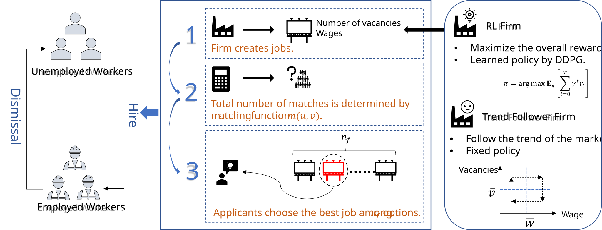
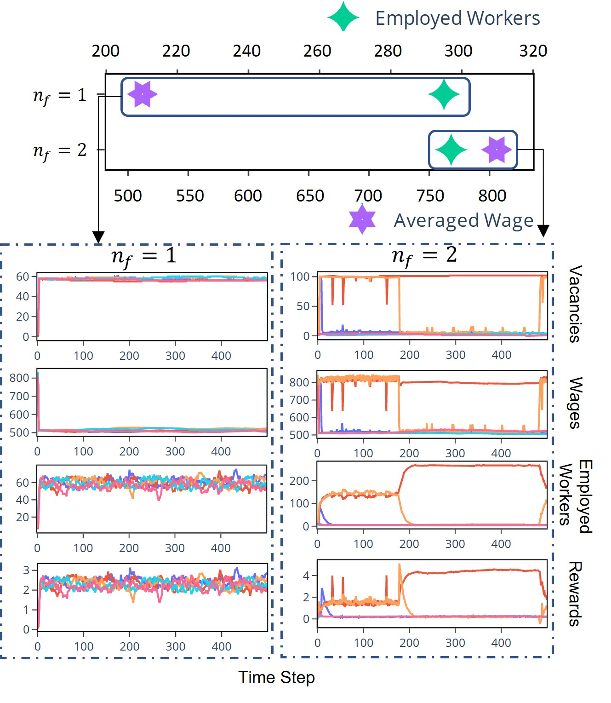

IEEE CiFer 2025 · Symposium on Computational Intelligence for Financial Engineering and Economics
RL-EM · the Reinforcement-Learning-based Employment Model
This paper proposes a framework for applying reinforcement learning (RL) within agent-based models (ABMs) to study labor market dynamics. ABMs provide a flexible platform for simulating economic systems, particularly by modelling heterogeneous agents and their complex interactions, which effectively capture non-linear and emergent phenomena in labor markets. We extend an existing labor market model by integrating it into an RL framework, using the Deep Deterministic Policy Gradient (DDPG) algorithm to train agents to maximize profits, and comparing their performance with bounded-rational agents governed by predefined policies. Our findings show that RL agents, depending on the level of competition and rationality in the market, spontaneously learn distinct strategies, which significantly impact outcomes such as unemployment and wage distribution.
Macroeconomics has long relied on models that assume what firms want and how they get it. Agent-based models relax the equilibrium assumptions but replace them with a different commitment: every agent needs a decision rule, written down in advance. This paper removes that commitment for one class of agent and asks what the agent does instead.
Dynamic stochastic general equilibrium
DSGE models are used extensively to analyze policy and shocks, but rely on strong assumptions about agent behavior and market conditions, which limits their realism and their applicability to real-world scenarios.
Agent-based models
ABMs let macroeconomic phenomena emerge from bottom-up interactions of heterogeneous agents, without assuming equilibrium. But the decision rules must still be predefined, which restricts the model's ability to adapt to new conditions or learn from experience.
This paper · RL-EM
A firm's policy is learned by trial-and-error interaction with the market rather than written down. What the firm ends up doing is then an observation about the market, not an assumption about the firm.
Workers flow between unemployment and employment. Firms post vacancies and wages; a matching function converts the two stocks into hires; job seekers pick the best-paying option among the nf they happen to see. The only thing that changes between the baseline and RL-EM is who decides the vacancies and wages.

A firm does not name a wage directly. It chooses a wage determination factor b that interpolates between the unemployment benefit z and the added value of a worker p. All of the firm's bargaining posture is compressed into that single scalar.
With z=500 and p=1000, b=1 pays the reservation wage and b=0 hands the entire surplus to the worker.
The market is not a market-clearing auction. The number of hires in a step is a Cobb–Douglas function of the two aggregate stocks: unemployed workers u and posted vacancies v. Employment and unemployment then follow a simple stock adjustment.
A=0.471, α=0.6, both taken from the empirical labor literature; separations occur at rate λ=0.1.
Firm type 1 · the learner
Observes the market state after the previous step — unemployment, its own headcount, total vacancies, total and own matches, the average and its own wage — and emits an action (v, b). It is trained with DDPG to maximize discounted profit, receiving a penalty of −100 whenever it ends a step with no employees.
Actor: 4 fully connected layers. Critic: 3 layers, with a target network and Ornstein–Uhlenbeck exploration noise. Curriculum learning introduces the agent after 5 steps.
Firm type 2 · the baseline
A bounded-rational rule with no objective function. Each step it compares its wage against the market average (wage delta ΔW) and its realized hires against what its vacancy share would have earned at the market fill rate (expected vacancies delta ΔE), then adjusts one of the two levers — Eq. (5) and (6) of the paper.
| Signal | Reading | Response |
|---|---|---|
| ΔW<0, ΔE<0 | underpaying, under-hiring | raise the wage |
| ΔW>0, ΔE>0 | overpaying, over-hiring | cut the wage |
| ΔW<0, ΔE>0 | cheap and effective | post more vacancies |
| ΔW>0, ΔE<0 | expensive and ineffective | post fewer vacancies |
| Symbol | Description | Value |
|---|---|---|
| z | Unemployment benefit | 500 |
| p | Added value of a worker | 1000 |
| c | Recruitment cost per vacancy | 100 |
| A | Matching function parameter | 0.471 |
| α | Matching elasticity | 0.6 |
| λ | Dismissal rate | 0.1 |
| T | Number of steps | 500 |
| NFirm | Number of firms | 5 |
| NWorker | Initial unemployed workers | 300 |
| NWorker/firm | Initial employed workers per firm | 5 |
| binit | Initial wage determination factor | 0.5 |
| μb | Trend-follower wage adjustment rate | 0.5 |
| μv | Trend-follower vacancy adjustment rate | 0.1 |
| γ | Discount factor | 0.9 |
| lractor | Actor learning rate | 10⁻⁴ |
| lrcritic | Critic learning rate | 10⁻³ |
Input states are normalized to [0,1] and profits and rewards are divided by 10⁴ for stability. All reward figures on this page use that same scaling.
A matched job seeker draws nf vacancies at random and takes the highest-paying one. From the firm's side, nf is how much competition it faces; from the worker's side, it is how transparent the market is. Every result in the paper is a sweep over this one number.
Five firms post vacancies at different wages. The paper states the selection rule in one sentence — “each unemployed worker randomly selects nf jobs and chooses the one with the highest wage” — and leaves it there. Written out, a firm's share of applicants is the probability that the best of nf draws lands on it:
where si is firm i’s share of all posted vacancies and Fi the share posted below its wage. Setting nf = 1 collapses this to si — the wage drops out entirely.
This closed form does not appear in the paper; it is worked out here, and it is what the simulator below implements. Getting from the sentence to the formula needs two things the paper does not state: that the nf draws are uniform over vacancies rather than over firms, and that they are drawn with replacement. Both are natural readings, and with many vacancies the second makes almost no difference — but they are assumptions, not quotations.
The four rivals all post at 750, so 750 is a tie. Wages come from Eq. (1), which bounds them between 500 and 1000.
The four rivals post 5 vacancies each.
One RL firm faces four trend followers. Nothing in the reward function mentions wages, exploitation, or scarcity — only discounted profit. Yet the converged policy is qualitatively different in each of the three competition regimes, and each has a recognizable name in economics.
nf = 1 · opaque market
Maximum volume, minimum wage
With no ability to compare offers, seekers must accept whatever they drew. The agent learns it can post an enormous number of jobs at the lowest possible wage and still fill them. It ends up employing most of the workforce.
Gresham's law for firms. The flood of cheap vacancies lowers everyone's fill rate, so the higher-paying trend followers face rising recruitment costs and shrink. Conscientious firms are crowded out by the exploitative one.
nf = 2 · limited competition
Promise high, then cut
Once seekers can compare two offers, the agent must outbid to be chosen. It announces a near-maximal wage, absorbs the workforce — dragging the trend followers' wages up with it — and then, because separations do not depend on the wage, cuts pay to the floor and stops hiring.
Best regime for workers. Employment and wages are both high. Firm profits are correspondingly low, and the trend followers even run negative.
nf = 20 · near-full competition
Few jobs, low wages
Bidding is now hopeless: only the top wage is ever accepted, and any raise is matched. The agent instead posts as few vacancies as possible. Because its own restraint keeps the trend followers small too, the market becomes job-scarce — and scarce jobs fill even when badly paid.
Transparency backfires. The market is almost perfectly transparent, yet workers have the fewest options and a lower average wage than under limited competition.
A browser reimplementation of the RL-EM environment. Choose what the RL firm does and how transparent the market is, and watch the four trend followers react over 500 steps. The point is the mechanism: why each strategy is viable in its own regime and what it does to workers.
RL firm's strategy
1 = opaque · 2 = limited competition · 20 = near-full transparency
Faithful to the paper. The wage rule (Eq. 1), the Cobb–Douglas matching function, the employment and unemployment transitions (Eq. 2–3), per-firm profit (Eq. 4), and all parameters in Table I are implemented exactly as stated.
Formalised here. The paper describes the selection rule in words — a seeker draws nf jobs and takes the highest wage — without writing down the resulting allocation. The closed form used here is the one derived in the section above, and it adds a rationing step the paper is silent on: a firm can only take as many workers as it posted vacancies, so seekers whose first choice is already full spill over to the next-best firm. Without that step the low-wage firm would receive nothing at high nf, and the scarcity strategy could not work at all.
Reimplementation choices. The trend-follower rules (Eq. 5–6) require a normalization for the wage delta that the paper does not specify; here it is divided by p−z, with a small dead band so the rule does not chatter, and vacancies floored at one. The paper does not state the firms' initial vacancy count; five is used.
Not the paper's system. The RL firm here is not a trained DDPG network. It replays a hand-specified caricature of the policy the trained agent converged to in each regime, so that the market response can be inspected step by step. Cumulative profits are therefore what a fixed strategy earns against fixed rule-based opposition, not the equilibrium payoff of a learned policy. With this setup the nf = 1 and nf = 20 market outcomes closely track the published values; at nf = 2 the trend followers do not re-expand after the RL firm withdraws, so the simulated market contracts further than the published run does.
For the published results, see the digitised figures above and below, or run the authors' code from the project repository.
Replacing more of the trend followers with learners changes the market twice over. First the learners begin to set the trend rather than respond to it. Then, at NRL = 5, what matters is whether they share one policy or hold their own.
Shared actor and critic
With all RL firms updating the same networks, the gradient they follow is the collective one. They converge on posting many vacancies at low wages to raise joint profits — the defining behavior of a cartel — and they do so regardless of the competition level. Competition stops disciplining wages entirely.
Where competition does exist, employment and profits vary widely across the identical firms: small differences from exploration noise are amplified into very different outcomes.
Independent actors and critics
Each firm now maximizes only its own profit, so the precondition for a cartel is gone. At nf = 1 all five converge on the sweatshop strategy. At nf = 2 they split spontaneously:

Reading the same simulations from the workers' side rather than the firms' gives the paper's policy-relevant conclusion, and it is not monotone in transparency.
No competition
Employment is high because the sweatshop absorbs the workforce, but wages sit at the floor and the better-paying firms have been driven out.
Limited competition · best for workers
Employment and wages are both at their highest across the entire study. Competition improves worker welfare without draining the market of dynamism — though firms earn very little.
Near-full competition
A firm able to influence market behavior responds to perfect competition by suppressing it. Job scarcity replaces wage competition, and workers end up with fewer options than before.
The paper introduces a framework for simulating labor markets by integrating deep multi-agent reinforcement learning into agent-based models, replacing rule-based bounded-rational firms with profit-maximizing DDPG agents. A single learner discovers three distinct strategies according to the competition level; shared-policy learners lead market trends and form a cartel; independent learners segregate into strategy groups. From the workers' perspective, outcomes are most favourable under limited competition.
@inproceedings{chen2025drl,
author = {Chen, Ruxin and Zhang, Zeqiang},
title = {Deep Reinforcement Learning in Labor Market Simulations},
booktitle = {2025 IEEE Symposium on Computational Intelligence for
Financial Engineering and Economics (CiFer)},
year = {2025},
publisher = {IEEE},
doi = {10.1109/CiFer64978.2025.10975741}
}
Acknowledgement. This work was financially supported by JST SPRING, Grant Number JPiSP2125. R.C. thanks the “THERS Make New Standards Program for the Next Generation Researchers”.
An interactive presentation assembled from the paper's figures, equations and reported results. Figures 1–3 have been redrawn as vector graphics; the simulator is an independent reimplementation and is not the authors' trained system.
© 2025 IEEE. The paper has been published in 2025 IEEE Symposium on Computational Intelligence for Financial Engineering and Economics (CiFer). Personal use of this material is permitted. Permission from IEEE must be obtained for all other uses, in any current or future media, including reprinting/republishing this material for advertising or promotional purposes, creating new collective works, for resale or redistribution to servers or lists, or reuse of any copyrighted component of this work in other works. DOI: 10.1109/CiFer64978.2025.10975741.